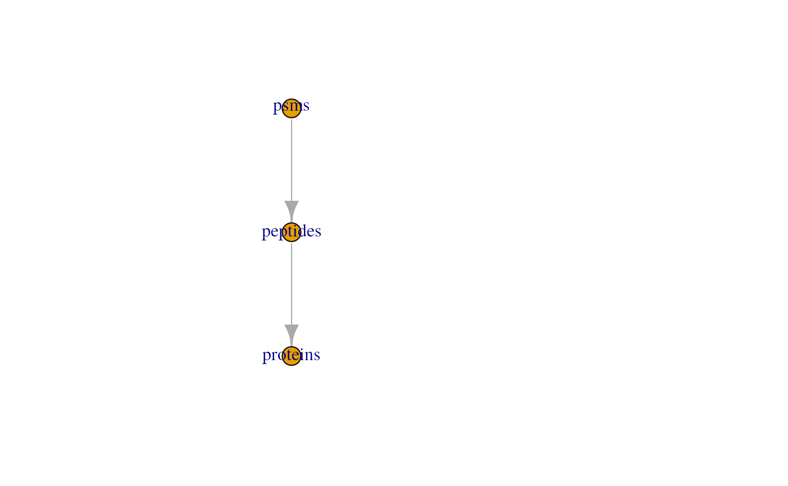
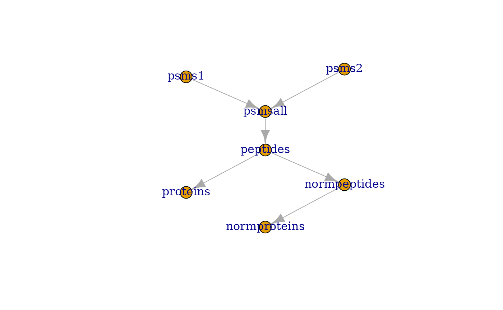
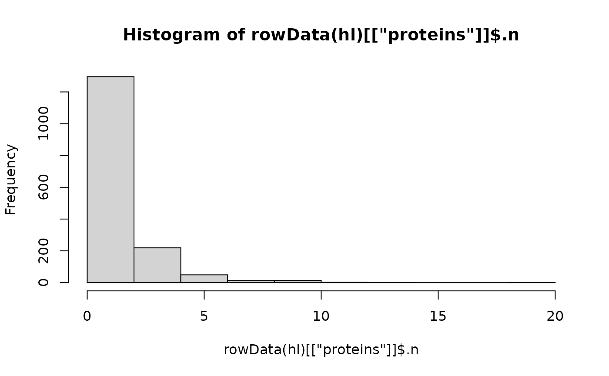
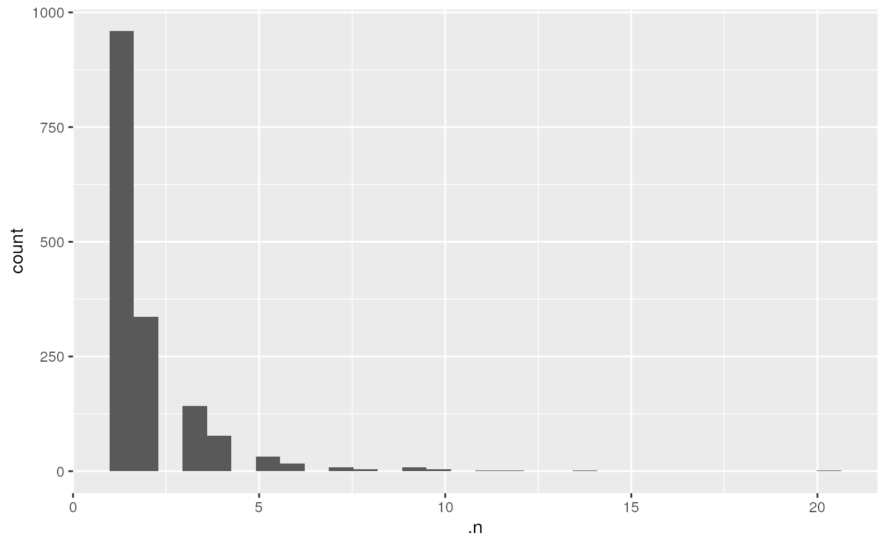
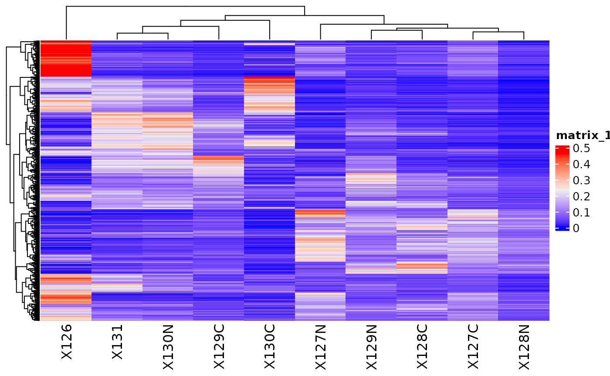
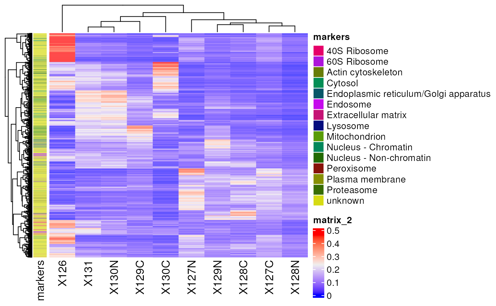
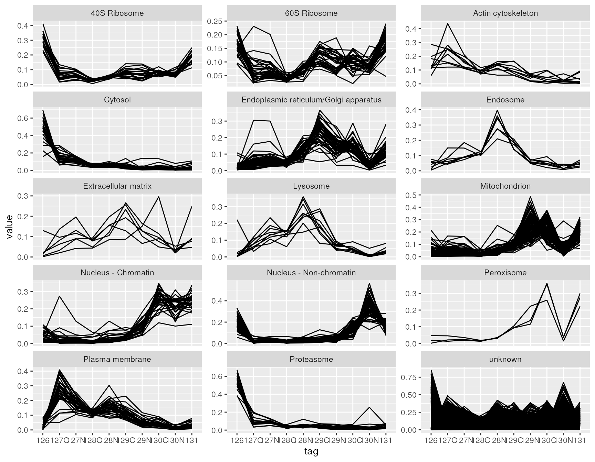

vignettes/Visualization.Rmd
Visualization.RmdAbstract
This vignette describes how to visualize quantitative mass spectrometry data contained in a QFeatures object.
To demonstrate the data visualization of a QFeatures, we first perform a quick processing of the hlpsms example data. We load the data and read it as a QFeautres object. See the processing vignette for more details about data processing with QFeatures.
library("QFeatures")
data(hlpsms)
hl <- readQFeatures(hlpsms, ecol = 1:10, name = "psms")We then aggregate the psms to peptides, and the peptodes to proteins.
hl <- aggregateFeatures(hl, "psms", "Sequence", name = "peptides", fun = colMeans)## Your row data contain missing values. Please read the relevant
## section(s) in the aggregateFeatures manual page regarding the effects
## of missing values on data aggregation.
hl <- aggregateFeatures(hl, "peptides", "ProteinGroupAccessions", name = "proteins", fun = colMeans)We also add the TMT tags that were used to multiplex the samples. The data is added to the colData of the QFeatures object and will allow us to demonstrate how to plot data from the colData.
hl$tag <- c("126", "127N", "127C", "128N", "128C", "129N", "129C",
"130N", "130C", "131")The dataset is now ready for data exploration.
QFeatures hierarchy
QFeatures objects can contain several assays as the data goes through the processing workflow. The plot function provides an overview of all the assays present in the dataset, showing also the hierarchical relationships between the assays as determined by the AssayLinks.
plot(hl)
This plot is rather simple with only three assays, but some processing workflows may involve more steps. The feat3 example data illustrates the different possible relationships: one parent to one child, multiple parents to one child and one parent to multiple children.

Note that some datasets may contain many assays, for instance because the MS experiment consists of hundreds of batches. This can lead to an overcrowded plot. Therefore, you can also explore this hierarchy of assays through an interactive plot, supported by the plotly package (Sievert (2020)). You can use the viewer panel to zoom in and out and navigate across the tree(s).
plot(hl, interactive = TRUE)The quantitative data is retrieved using assay(), the feature metadata is retrieved using rowData() on the assay of interest, and the sample metadata is retrieved using colData(). Once retrieved, the data can be supplied to the base R data exploration tools. Here are some examples:
proteins assay.
plot(assay(hl, "proteins")[1, ]).n from the protein rowData.
hist(rowData(hl)[["proteins"]]$.n)
tag from the colData.
table(hl$tag)##
## 126 127C 127N 128C 128N 129C 129N 130C 130N 131
## 1 1 1 1 1 1 1 1 1 1ggplot2
ggplot2 is a powerful tool for data visualization in R and is part of the tidyverse package ecosystem (Wickham et al. (2019)). It produces elegant and publication-ready plots in a few lines of code. ggplot2 can be used to explore QFeatures object, similarly to the base functions shown above. Note that ggplot2 expects data.frame or tibble objects whereas the quantitative data in QFeatures are encoded as matrix (or matrix-like objects, see ?SummarizedExperiment) and the rowData and colData are encoded as DataFrame. This is easily circumvented by converting those objects to data.frames or tibbles. See here how we reproduce the plot above using ggplot2.
library("ggplot2")
df <- data.frame(rowData(hl)[["proteins"]])
ggplot(df) +
aes(x = .n) +
geom_histogram()
We refer the reader to the ggplot2 package website for more information about the wide variety of functions that the package offers and for tutorials and cheatsheets.
Another useful package for quantitative data exploration is ComplexHeatmap (Gu, Eils, and Schlesner (2016)). It is part of the Bioconductor project (Gentleman et al. (2004)) and facilitates visualization of matrix objects as heatmap. See here an example where we plot the protein data.
library(ComplexHeatmap)
Heatmap(matrix = assay(hl, "proteins"),
show_row_names = FALSE)
ComplexHeatmap also allows to add row and/or column annotations. Let’s add the predicted protein location as row annotation.
ha <- rowAnnotation(markers = rowData(hl)[["proteins"]]$markers)
Heatmap(matrix = assay(hl, "proteins"),
show_row_names = FALSE,
left_annotation = ha)
More advanced usage of ComplexHeatmap is described in the package reference book.
In this section, we show how to combine in a single table different pieces of information available in a QFeatures object, that are quantitation data, feature metadata and sample metadata. The QFeatures package provides the longFormat function that converts a QFeatures object into a long table. Long tables are very useful when using ggplot2 for data visualization. For instance, suppose we want to visualize the distribution of protein quantitation (present in the proteins assay) with respect to the different acquisition tags (present in the colData) for each predicted cell location separately (present in the rowData of the assays). Furthermore, we link the quantitation values coming from the same protein using lines. This can all be plotted at once in a few lines of code.
lf <- longFormat(hl[, , "proteins"],
rowvars = "markers",
colvars = "tag")## Warning: 'experiments' dropped; see 'metadata'## harmonizing input:
## removing 20 sampleMap rows not in names(experiments)
ggplot(data.frame(lf)) +
aes(x = tag,
y = value,
group = rowname) +
geom_line() +
facet_wrap(~ markers, scales = "free_y", ncol = 3)
longFormat allows to retrieve and combine all available data from a Qfeatures object. We here demonstrate the ease to combine different pieces that could highlight sample specific and/or feature specific effects on data quantitation.
Finally, a simply shiny app allows to explore and visualise the respective assays of a QFeatures object.
display(hl)
QFeatures interactive interface: heatmap of the peptide assay data.
QFeatures interactive interface: quantitative peptide assay data.
QFeatures interactive interface: peptide assay row data
A dropdown menu in the side bar allows the user to select an assay of interest, which can then be visualised as a heatmap (figure @ref(fig:heatmapdisplay)), as a quantitative table (figure @ref(fig:assaydisplay)) or a row data table (figure @ref(fig:rowdatadisplay)).
## R Under development (unstable) (2021-11-16 r81199)
## Platform: x86_64-pc-linux-gnu (64-bit)
## Running under: Ubuntu 20.04.3 LTS
##
## Matrix products: default
## BLAS/LAPACK: /usr/lib/x86_64-linux-gnu/openblas-pthread/libopenblasp-r0.3.8.so
##
## locale:
## [1] LC_CTYPE=en_US.UTF-8 LC_NUMERIC=C
## [3] LC_TIME=en_US.UTF-8 LC_COLLATE=en_US.UTF-8
## [5] LC_MONETARY=en_US.UTF-8 LC_MESSAGES=C
## [7] LC_PAPER=en_US.UTF-8 LC_NAME=C
## [9] LC_ADDRESS=C LC_TELEPHONE=C
## [11] LC_MEASUREMENT=en_US.UTF-8 LC_IDENTIFICATION=C
##
## attached base packages:
## [1] grid stats4 stats graphics grDevices utils datasets
## [8] methods base
##
## other attached packages:
## [1] ComplexHeatmap_2.11.0 ggplot2_3.3.5
## [3] QFeatures_1.5.2 MultiAssayExperiment_1.21.3
## [5] SummarizedExperiment_1.25.2 Biobase_2.55.0
## [7] GenomicRanges_1.47.5 GenomeInfoDb_1.31.1
## [9] IRanges_2.29.1 S4Vectors_0.33.4
## [11] BiocGenerics_0.41.2 MatrixGenerics_1.7.0
## [13] matrixStats_0.61.0 BiocStyle_2.23.0
##
## loaded via a namespace (and not attached):
## [1] ProtGenerics_1.27.0 bitops_1.0-7 fs_1.5.0
## [4] doParallel_1.0.16 RColorBrewer_1.1-2 rprojroot_2.0.2
## [7] tools_4.2.0 bslib_0.3.1 utf8_1.2.2
## [10] R6_2.5.1 lazyeval_0.2.2 colorspace_2.0-2
## [13] GetoptLong_1.0.5 withr_2.4.2 tidyselect_1.1.1
## [16] compiler_4.2.0 textshaping_0.3.6 desc_1.4.0
## [19] DelayedArray_0.21.2 labeling_0.4.2 bookdown_0.24
## [22] sass_0.4.0 scales_1.1.1 pkgdown_1.9000.9000.9000
## [25] systemfonts_1.0.3 stringr_1.4.0 digest_0.6.28
## [28] rmarkdown_2.11 XVector_0.35.0 pkgconfig_2.0.3
## [31] htmltools_0.5.2 fastmap_1.1.0 highr_0.9
## [34] rlang_0.4.12 GlobalOptions_0.1.2 shape_1.4.6
## [37] jquerylib_0.1.4 farver_2.1.0 generics_0.1.1
## [40] jsonlite_1.7.2 dplyr_1.0.7 RCurl_1.98-1.5
## [43] magrittr_2.0.1 GenomeInfoDbData_1.2.7 Matrix_1.3-4
## [46] Rcpp_1.0.7 munsell_0.5.0 fansi_0.5.0
## [49] MsCoreUtils_1.7.0 lifecycle_1.0.1 stringi_1.7.5
## [52] yaml_2.2.1 MASS_7.3-54 zlibbioc_1.41.0
## [55] parallel_4.2.0 crayon_1.4.2 lattice_0.20-45
## [58] circlize_0.4.13 magick_2.7.3 knitr_1.36
## [61] pillar_1.6.4 igraph_1.2.8 rjson_0.2.20
## [64] codetools_0.2-18 glue_1.5.0 evaluate_0.14
## [67] BiocManager_1.30.16 vctrs_0.3.8 png_0.1-7
## [70] foreach_1.5.1 gtable_0.3.0 purrr_0.3.4
## [73] clue_0.3-60 cachem_1.0.6 xfun_0.28
## [76] AnnotationFilter_1.19.0 ragg_1.2.0 tibble_3.1.6
## [79] iterators_1.0.13 memoise_2.0.0 cluster_2.1.2
## [82] ellipsis_0.3.2